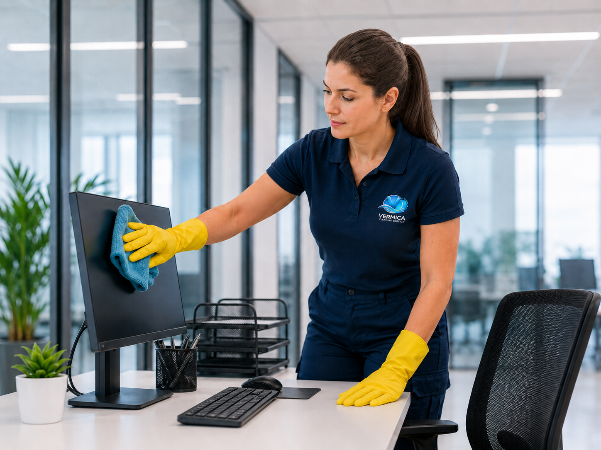
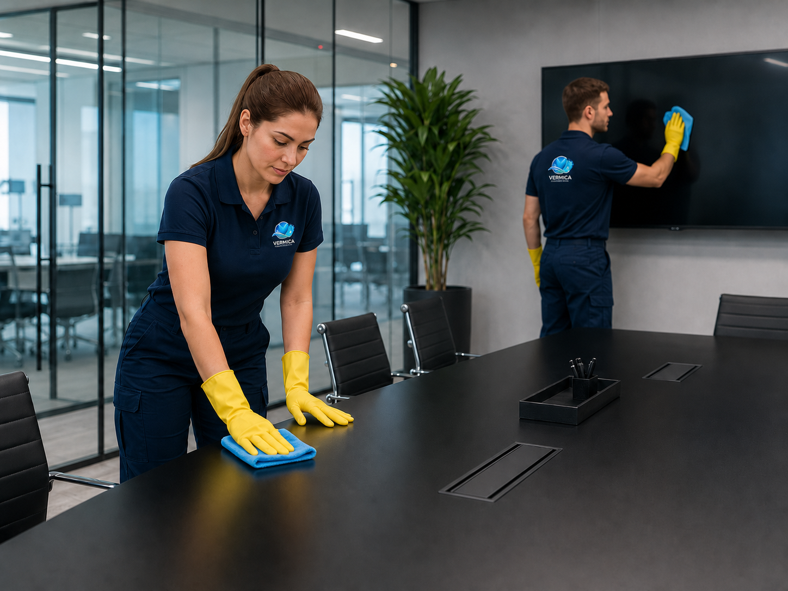

Professionelle Büroreinigung in Lübeck für saubere, gepflegte und hygienische Arbeitsräume. Wir sorgen für eine angenehme Atmosphäre für Mitarbeiter, Kunden und Besucher.
Eine professionelle Büroreinigung ist ein wichtiger Bestandteil eines gepflegten Unternehmensauftritts. Saubere Büroräume sorgen nicht nur für ein angenehmes Erscheinungsbild, sondern auch für mehr Wohlbefinden und Motivation im Arbeitsalltag.
VERMICA Gebäudeservice bietet individuelle Reinigungslösungen für Büros, Kanzleien, Praxen und Gewerbeflächen in Lübeck und Umgebung. Wir passen unsere Leistungen flexibel an Ihre Anforderungen und Reinigungsintervalle an.
Ob Schreibtische, Böden, Sanitärbereiche oder Gemeinschaftsflächen – wir achten auf Sauberkeit, Hygiene und Zuverlässigkeit in jedem Detail. So können Sie sich ganz auf Ihr Geschäft konzentrieren.


Wir übernehmen alle wichtigen Reinigungsarbeiten, damit Ihre Büroräume dauerhaft sauber und einladend bleiben.
Schreibtische, Tische, Ablagen und sichtbare Oberflächen werden gründlich gereinigt.
Wir reinigen Teppichböden, Hartböden und Laufwege zuverlässig und sorgfältig.
Toiletten, Waschbecken und Sanitärflächen werden hygienisch sauber gehalten.
Aufenthaltsräume, Küchenflächen und sichtbare Bereiche werden ordentlich gereinigt.
Papierkörbe und Abfallbehälter werden geleert und sauber hinterlassen.
Türgriffe, Lichtschalter und häufig berührte Flächen werden sorgfältig gereinigt.
Schreiben Sie uns oder rufen Sie uns an. Wir erstellen Ihnen gerne ein individuelles Angebot für Ihre Büroreinigung in Lübeck.